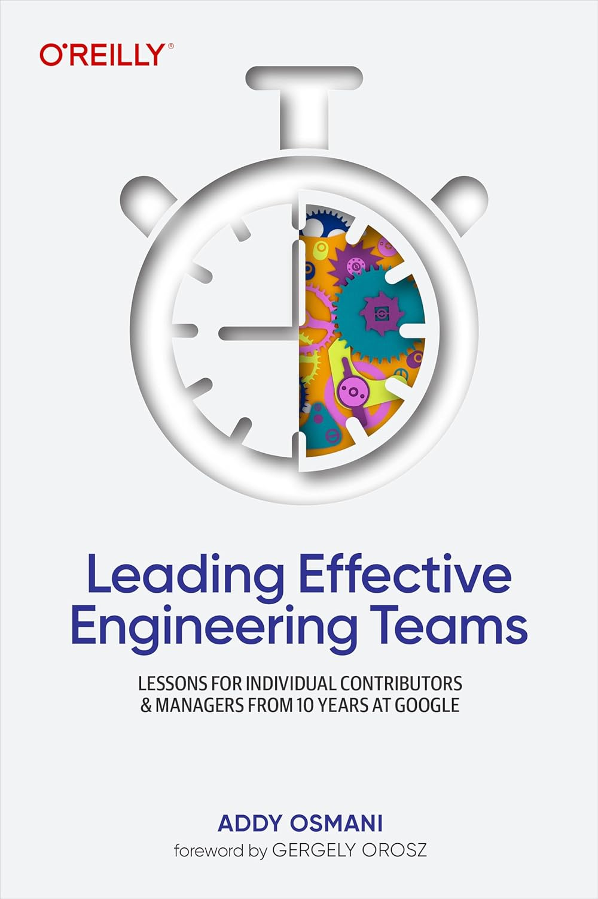

تجربهی ۱۰ سالهی ادی عثمانی از کار در گوگل برای کارشناسان فنی و مدیران
میتوانید از کد تخفیف OFF نیز استفاده کنید.
خرید با ۳۰٪ تخفیف
کتاب رهبری تیمهای مهندسی اثربخش، راهنمایی عملی برای رهبران فنی است نوشتهی یکی از مدیران باسابقهی گوگل، با تمرکز بر ساخت تیمهایی مسئول، قابلاعتماد و هماهنگ در محیطهای پیچیدهی مهندسی. نویسنده این کتاب از طریق مثالهای متنوع، تجربهی بیش از ده سال کار در موقعیتهای شغلی مختلف در شرکت گوگل را با شما به اشتراک میگذارد. ادی عثمانی مهندس نرمافزار و نویسندهای برجسته است که در حال حاضر بهعنوان مدیر ارشد مهندسی در تیم Chrome در گوگل فعالیت میکند. او رهبری تیم تجربه توسعهدهندگان Chrome را بر عهده دارد و مسئول بهبود ابزارها و استانداردهای وب برای توسعهدهندگان است. ادی در ایرلند متولد و بزرگ شده و تحصیلات خود را در دانشگاههای Sheffield Hallam و Warwick به پایان رسانده است. پیش از پیوستن به گوگل در سال ۲۰۱۲، او در شرکتهایی مانند AOL و Pixsta فعالیت داشته و در پروژههای متنبازی مانند jQuery مشارکت کرده است. او نویسندهی کتابهای متعددی در حوزهی توسعهی وب است، از جمله «الگوهای طراحی جاوااسکریپت» و «بهینهسازی تصاویر». ادی همچنین در پروژههای مهمی مانند Google Lighthouse، PageSpeed Tools و Core Web Vitals نقش داشته و به بهبود تجربهی کاربری وب کمک کرده است. در کتاب «رهبری تیمهای مهندسی اثربخش»، ادی عثمانی تجربیات بیش از یک دههی خود در گوگل را به اشتراک میگذارد و راهنماییهای عملی برای رهبران فنی و مدیران مهندسی ارائه میدهد.
میثم ولیاللهی
مهندس نرمافزار
مشاهده LinkedInمیثم ولیالهی، مهندس نرمافزار و رهبر تیمهای فنی با بیش از یک دهه تجربه در صنعت فناوری اطلاعات است. او در حال حاضر به عنوان معاون فنی (VP of Engineering) در شرکت شیپور فعالیت میکند؛ جایی که رهبری فنی تیمی بزرگ را بر عهده دارد و مسئول طراحی و پیادهسازی سیستمهای مقیاسپذیر، بهبود تجربه توسعهدهنده، و ارتقاء کیفیت فنی محصولات است. پیش از پیوستن به شیپور، میثم در نقشهای متعددی از جمله رهبر تیم، مدیر فنی و توسعهدهنده ارشد در شرکتهای تخفیفان، کارنامه، دیتاک، سیباپ و ... فعالیت کرده است. او سابقه کار در استارتاپها و سازمانهای بزرگ را دارد و به خوبی با چالشهای مقیاسپذیری، معماری نرمافزار، و توسعه تیمهای چابک آشناست. در طی این سالها، تمرکز اصلیاش بر سادهسازی سیستمها، کاهش بدهی فنی و ایجاد تیمهایی با همکاری اثربخش و هدفمحور بوده است.
چند صفحهست؟
نسخهی فارسی ۳۱۷ صفحه هست که عینا ترجمه شده.
چطور فایل رو دریافت میکنیم؟
بعد از پرداخت از طریق تلگرام فایل برای شما ارسال خواهد شد.
امکان کارت به کارت هم هست؟
بعد از واریز مبلغ ۳۰۰ هزارتومان به شماره کارت 6219861040364960 فیش رو به آیدی تلگرام @m_valiolahi ارسال کرده و فایل رو دریافت میکنید.